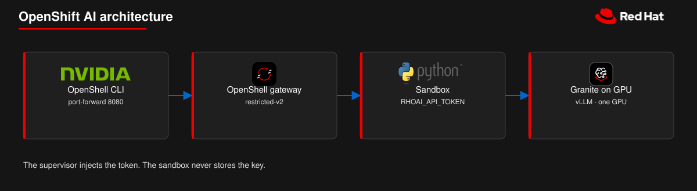

Granite 3.3 2B en una GPU NVIDIA, el gateway de OpenShell 0.1.8 sin el SCC privileged, y un sandbox que solo ve el placeholder RHOAI_API_TOKEN. El texto largo, en inglés, es openshift-ai.md.

El supervisor sustituye el token real solo para el host y el puerto del perfil.
Pieza
Versión
OpenShift
4.19 o posterior (Landlock)
OpenShift AI
3.x, KServe single-model
Chart de OpenShell
0.1.8
vllm-kserve
0.7.1
Modelo
granite-3.3-2b-instruct
Agent Sandbox
v1.0.10 sandbox.yaml
1 Servir el modelo
Hace falta cluster-admin, Helm 3, la plataforma de model serving y el GPU Operator. Confirmá el hardwareProfilenvidia-gpu-serving en redhat-ods-applications.
El chart 0.7.1 deja la autenticación activa. Leé MODEL_HOST y MODEL_PORT del Service. Un Service headless usa el targetPort 8080. Esos valores van en deploy/rhoai-granite.profile.yaml antes de importar. No imprimas el token.
Vas a ver. Helm termina y el InferenceService de Granite queda Ready. Este camino pide un cluster que administrás; Developer Sandbox no lo puede instalar.
deploy/openshift-scc-values.yaml borra podSecurityContext y runAsUser. Pasarlos en --set como null deja el UID 1000 del chart, y restricted-v2 lo rechaza.
Vas a ver. El chart 0.1.8 queda instalado en el namespace openshell sin el SCC privileged.
Vas a ver. El gateway openshift está Connected. El token está en el provider, no en el env del sandbox.
4 Sandbox y ask.py
model-check usa ubi9/toolbox y /usr/bin/curl. hello-agent usa ubi9/python-312 y /opt/app-root/bin/python3. El shell expande MODEL_HOST. \${RHOAI_API_TOKEN} llega literal hasta el bash del sandbox. Todos los comandos están en openshift-ai.md.
Vas a ver.model-check y hello-agent completan. El sandbox solo ve el token placeholder.